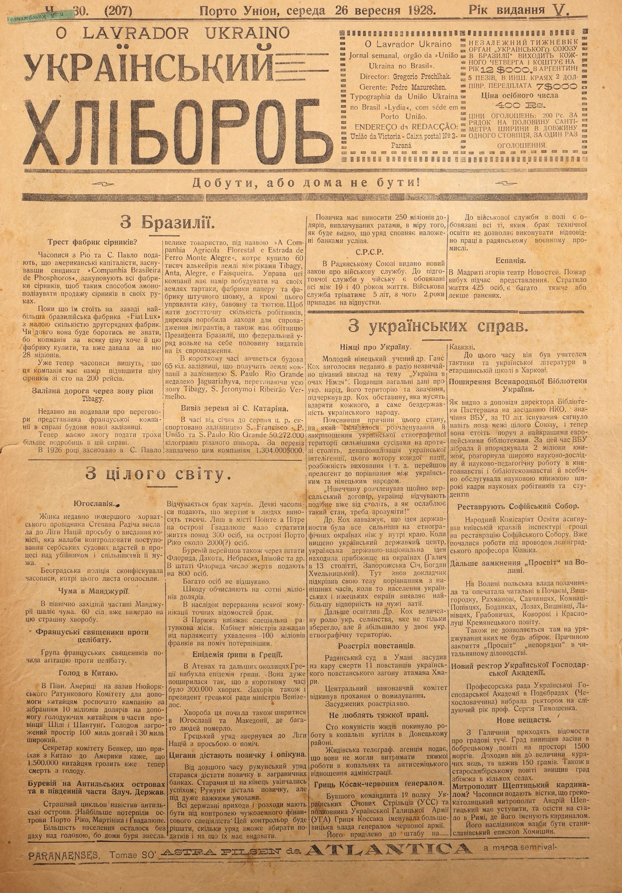
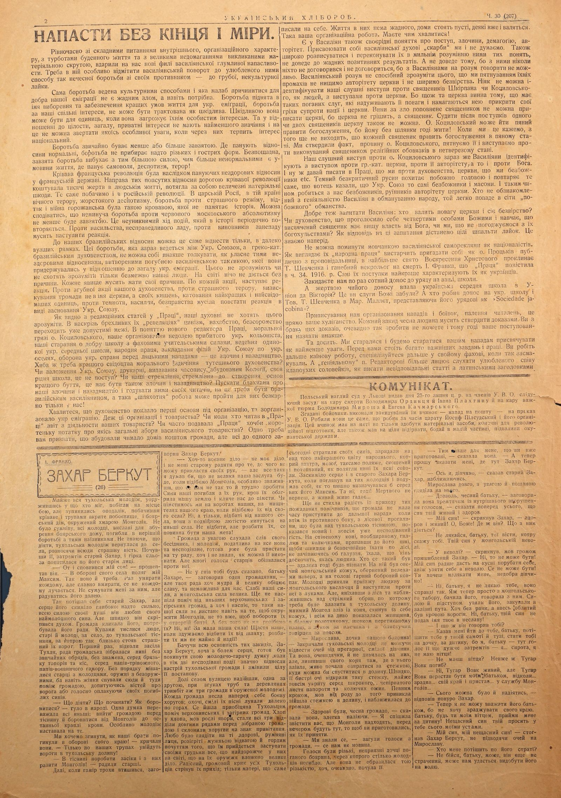
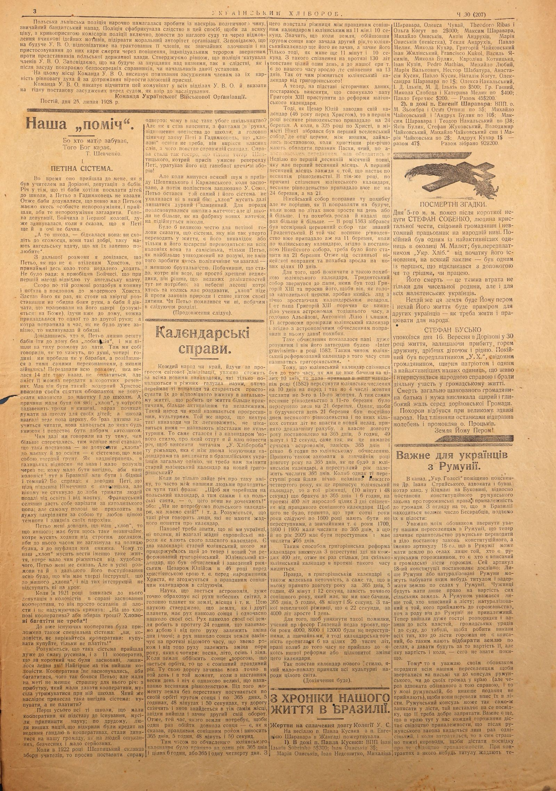
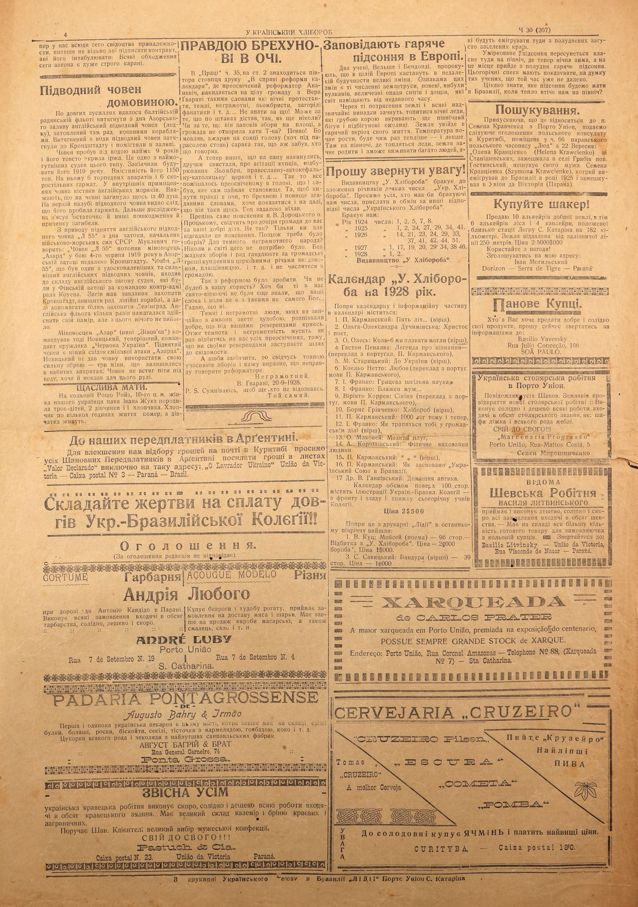

This page features international news from Brazil, the USSR, Spain, Yugoslavia, China, and the USA. Key topics include the formation of a match syndicate in Brazil, the conscription law in the USSR, a theater fire in Madrid, a plague outbreak in Manchuria, widespread famine in China, and hurricane devastation in the Antilles and the Southern USA. Ukrainian news covers a lecture by German scholar Dr. Koch on Ukrainian identity, the expansion of the All-National Library of Ukraine, the restoration of St. Sophia Cathedral, the continued closure of 'Prosvita' reading rooms in Volhynia, and reports of hailstorms in Galicia. It also mentions Metropolitan Andriy Sheptytsky being referred to as a cardinal in Rome and the appointment of a new rector for the Ukrainian Economic Academy in Poděbrady.
O LAVRADOR UKRAINO УКРАЇНСЬКИЙ ХЛІБОРОБ ↗
O Lavrador Ukraino Weekly newspaper, organ of "União Ukraina no Brasil". Director: Gregorio Prechihak. Manager: Pedro Mazurechen. Typographia da União Ukraina no Brasil "Lydia", with headquarters in Porto União. EDITORIAL ADDRESS: União da Victoria - Caixa postal № 3 - Paraná ↗
INDEPENDENT WEEKLY ORGAN OF THE "UKRAINIAN UNION IN BRAZIL" PUBLISHED EVERY THURSDAY AND COSTS 12$000 PER YEAR, IN ARGENTINA 5 PESOS, IN OTHER COUNTRIES 2 USD. HALF-YEARLY SUBSCRIPTION 7$000. Price per individual issue 400 Rs. ADVERTISEMENT PRICES: 200 Rs. PER LINE FOR HALF A CENTIMETER IN WIDTH ALONG ONE COLUMN, PER SINGLE ADVERTISEMENT. ↗
Earn your place, or have no home ↗
From Brazil. ↗
Match factory trust? ↗
Newspapers from Rio and S. Paulo report that American capitalists, having founded the syndicate "Companhia Brasileira de Phosphoros", are buying up all match factories in order to monopolize the sale of matches in their hands. ↗
So far, the largest Brazilian factory "Fiat Lux", along with a small number of secondary factories, stands in their way. How long it will fight is unknown, as the company wants to buy this factory at any cost, and has already offered 28 million for it. ↗
Newspapers are already writing that this company intends to raise the price of matches from one hundred to 200 reis. ↗
Railway through the Tibagy river zone. ↗
Recently, we reported on negotiations by a representative of a French company regarding the construction of a new railway. ↗
Now we are able to provide a few more details on this matter. ↗
In 1926, a large company was founded in S. Paulo, under the name "A Companhia Agricola Florestal e Estrada de Ferro Monte Alegre", which bought 60 thousand alqueires of land between the Tibagy, Anta, Alegre, and Faisqueira rivers. The management of this company intends to build sawmills, paper factories, and an artificial silk factory on its lands, and besides this, to cultivate coffee, cotton, and tobacco. To have a sufficient number of workers, the management has taken steps to bring in immigrants, and also has a promise from the President of Brazil that the federal government will cover half of the expenses for their immigration. ↗
In a short time, the construction of a 65 km railway will begin, connecting the company's lands with the S. Paulo Rio Grande railway near Jaguariahyva, crossing the entire zone of Tibagy, S. Jeronymo, and Ribeirão Vermelho. ↗
Timber export from S. Catarina. ↗
From January to August this year, 50,272,000 kilograms of cut pine wood were exported by the S. Francisco P. União and S. Paulo Rio Grande railways. 1,304,000$000 was paid to these companies for transportation. ↗
From around the WORLD. ↗
Yugoslavia. ↗
The wife of the recently deceased Croatian leader Stepan Radić sent a request to the League of Nations for a commission to monitor the proceedings of the Serbian judicial authorities in the case against her husband's assassin and accomplices. ↗
Belgrade police confiscated newspapers that published this letter. ↗
Plague in Manchuria. ↗
Plague is raging in the northwestern part of Manchuria. 60 villages have already died out from this terrible disease. ↗
French priests against celibacy. ↗
A group of French priests has begun an agitation against celibacy. ↗
Famine in China. ↗
In North America, at the call of the New York Relief Committee for aid to the Chinese, a campaign has been launched to raise 10 million dollars to help the starving Chinese in parts of Zhili and Shandong provinces. The area threatened by famine is 100 miles long and 30 miles wide. ↗
Committee Secretary Banker, who came to America from China, says that 1,500,000 Chinese are now facing death from starvation. ↗
Hurricane in the Antilles and in the southern part of the United States. ↗
A terrible cyclone visited the Antilles. The islands of Puerto Rico, Martinique, and Guadeloupe suffered the most. ↗
Most of the population was left homeless, as houses were destroyed by the storm. ↗
There is a shortage of food. Some newspapers report that human casualties number in the thousands. In the city of Pointe-à-Pitre on the island of Guadeloupe alone, over 300 people are reported to have lost their lives, and about 2000 (?) people on the island of Puerto Rico. ↗
The hurricane also passed through the states of Florida, Dakota, Nebraska, Illinois, etc. In Florida, the number of victims is reported to be 800 people. ↗
Many people are still missing. ↗
The damage is estimated at hundreds of millions of dollars. ↗
Due to the disruption of all communications, accurate information is lacking. ↗
A special rescue mission is leaving Paris. The cabinet of ministers demanded that parliament approve 100 million francs to aid the victims. ↗
Flu epidemic in Greece. ↗
A flu epidemic has broken out in Athens and other parts of Greece. It spread so rapidly that in a short time there were 300,000 sick people. The president of the Greek council of ministers, Venizelos, also fell ill. ↗
This disease also began to spread in Yugoslavia and Macedonia, where many people died. ↗
The Greek government appealed to the League of Nations for help. ↗
Gypsies get a loan and a guardian. ↗
For a long time, the Romanian government tried to get a loan from foreign banks. These efforts finally succeeded; Romania received a loan, but under very difficult conditions. ↗
All state revenues and expenditures must be under the control of a foreign financial specialist. This controller will decide how much the government can collect in taxes and for what purposes it should spend them. ↗
The loan is to amount to 250 million dollars, payable in installments, as it becomes clear that the government is fulfilling the conditions imposed by the banks. ↗
USSR. ↗
A new law on military service has been issued in the Soviet Union. All persons between 19 and 40 years of age are obliged to perform preparatory military service. Military service will last 5 years, of which 2 years are allocated for leave. ↗
All those whose lack of technical education does not allow them to perform appropriate work in the Soviet war industry are obliged to perform military service in the field. ↗
Spain. ↗
The News Theater in Madrid burned down. The fire broke out during a performance. 425 people lost their lives, and many were seriously or lightly injured. ↗
From Ukrainian affairs. ↗
Germans about Ukraine. ↗
A young German scholar, Dr. Hans Koch, recently delivered an unusually interesting radio lecture on the topic "Ukraine in the eyes of a German". After providing general data on the Ukrainian nation, its territory and significance, Dr. Koch emphasized a circumstance that must strike everyone, namely the statelessness of the Ukrainian people. ↗
Explaining the causes of this state, which included the dismemberment and subjugation of Ukrainian ethnographic territory by stronger neighbors over centuries, the denationalization of the Ukrainian intelligentsia, this engine of every nation, the divergence of education, etc., the lecturer proceeded to compare the Ukrainian and German peoples. ↗
"Germany was dismembered only by the Treaty of Versailles; Ukrainians have experienced something similar for centuries, and how such a state weakens a people must be understood!" ↗
Dr. Koch notes that the idea of statehood was always stronger in the ethnographic borderlands than in the interior of the country. When the Ukrainian state center was destroyed, the Ukrainian state-national idea found refuge in the borderlands (Halych in the 13th century, Zaporizhian Sich, Bohdan Khmelnytsky). Here, the speaker reinforced his thesis by comparison with present times, when the population of the Ukrainian and German borderlands shows the greatest response to foreign encroachments. ↗
Furthermore, Dr. Koch elucidated the enormous role of the Ukrainian peasantry, which not only preserved but also doubled the Ukrainian ethnographic territory. ↗
Execution of rebels. ↗
A Soviet court in Uman sentenced 11 rebels from Ataman Khmara's Ukrainian insurgent detachment to death. ↗
The Central Executive Committee rejected the appeal for pardon. ↗
The condemned were shot. ↗
Do not like hard work. ↗
One hundred Jewish communists quit their jobs in a coal mine in the Donetsk region. ↗
The Jewish Telegraphic Agency reports that they could not endure the hard work in the mines and the antisemitic attitude of the administration. ↗
Hryts Kosak - a Red General. ↗
The former commander of the 1st regiment of the Ukrainian Sich Riflemen (USS) and colonel of the Ukrainian Galician Army (UHA), Hryts Kosak, was appointed a general of the Red Army by the Bolshevik authorities. ↗
He was assigned to the staff in the Caucasus. ↗
Until this time, he was a teacher of tactics and Ukrainian literature at the officers' school in Kharkiv. ↗
Expansion of the All-National Library of Ukraine. ↗
As can be seen from the report of the Library Director Pasternak at the NKO meeting, the significance of VBU, after 10 years of existence, has reached even beyond the borders of the entire Union, and now it stands alongside the best European libraries. During this time, VBU collected and organized 2 million books, widely developed scientific-research and scientific-pedagogical work in bibliography and library science, and comprehensively served wide cadres of scientific workers and students. ↗
Restoration of Saint Sophia Cathedral. ↗
The People's Commissariat of Education allocated funds to the Kyiv regional inspectorate for the restoration of Saint Sophia Cathedral. Work has already begun under the leadership of Leningrad professor Kipnik. ↗
Further closure of "Prosvitas" in Volhynia. ↗
In Volhynia, the Polish authorities closed and sealed reading rooms in Pochaiv, Vyshhorodok, Rakhmaniv, Savchyntsi, Komnatsi-Popivtsi, Bodanky, Lozy, Vyshnivtsi, Lanivtsi, Hrabovychi, Kovoriv, and Krasnoluka in Kremenets district. Also, no gatherings of any kind are allowed there. The reason for the closure of "Prosvitas" is "disorders" in reading room record-keeping. ↗
New Rector of the Ukrainian Economic Academy. ↗
The professorial council of the Ukrainian Economic Academy in Poděbrady (Czechoslovakia) elected Prof. Serhiy Tymoshenko as rector for the following year. ↗
New disaster. ↗
News of hailstorms comes from Galicia. Hail destroyed crops in Bobrets district over an area of 1500 morgs. It reached the size of chicken eggs and weighed 150 grams. Also in Starosambir district, hail destroyed grain in several villages. ↗
Metropolitan Sheptytsky a cardinal? Newspapers report news that the Greek Catholic Metropolitan Andrey Sheptytsky is to resign and settle permanently in Rome, where he will be named a cardinal. His successor is said to be Bishop Khomyshyn of Stanislav. ↗
PARANAENSES, Take only ASTRA PILSEN from ATLANTICA, the unrivaled brand - ↗
ATTACKS WITHOUT END OR MEASURE. Simultaneously with complex issues of an internal, organizational nature, with the worries of daily life, and with great ailments caused by material hardship, new waves of Basilian mocking aggression struck us. In it, one must particularly note the Basilian return to their favorite method of such dishonest struggle with their opponent — to crude, uncultured swearing. A struggle conducted by cultural means and which should contribute to the good of our emigration is not an evil at all, but even necessary. A struggle undertaken in the name of electing and ensuring better living conditions for the Ukrainian emigration, a struggle for our common interests, cannot be treated as harmful. It can be harmful to individuals when it threatens their personal interests. But in relation to the whole, to the general public, private interests have no significance whatsoever, and no special attention should be paid to them when the national interest suffers because of them. Struggle is usually more or less tenacious. Where normal relations prevail, the struggle does not take on overly sharp and acute forms. A merciless, tenacious struggle erupts with greater force the more abnormal the living conditions, where arbitrariness, despotism, and terror prevail! The bloody French Revolution was a consequence of the prevailing unhealthy relations in the French state. The rectification of those corrupted relations through a bloody revolution cost thousands of lives and entailed enormous material damage. We see the same in the Russian Revolution. In Tsarist Russia, in that country of eternal terror, cruel despotism, the struggle against the terrible regime, and then the civil war, was so bloody that history does not remember its like. It can be expected that the inevitable struggle against red Muscovite absolutism will be no less tenacious. This is an unavoidable course of events that periodically repeats itself in history. Against violence, an unjust order, against the perpetrators of decline, a reaction must follow. To our Brazilian relations, this can only be applied within much narrower limits. This struggle, which is currently being waged between the Ukrainian Union and the Greek-Catholic Brazilian clergy, cannot be interpreted otherwise than by those very unhealthy relations created by the destructive Basilian tactics they adhered to in relation to the general Ukrainian emigration. Only infinitely naive people will not understand this or will not want to understand it. Nothing happens in the world without a cause. Every phenomenon must have its causes. After every action, a reaction follows. Against the destructive actions of our clergy, against terrible terror, the exploitation of the community not in the name of the church, but for their own pockets, the torture of the best and most conscious individuals, against darkness, violence, lawlessness, a reaction had to arise in the form of the establishment of the Ukrainian Union. As can be seen from the editorial articles in "Pratsia", our clergy do not want to understand this. In their thoroughly mendacious "revelations", cynicism, impudence, and shamelessness already exceed permissible limits. In the understanding of the new editor of Pratsia, the moral filth of Father Kotsylovsky, our organization of the Ukrainian colonist oppressed by misfortune, our efforts for a good school with professional teaching staff, the management of the only Ukrainian secondary school, national work, the establishment of branches of the Ukrainian Union in Ukrainian settlements, the defense of the Ukrainian cause against Polish attacks — this is a crime and backwardness. Is there a need for better evidence of the moral savagery of the local clergy? Is the establishment of the Ukrainian Union, a printing house, the publication of a newspaper, the construction of a Collegium, our own native school, not progress? Are our aspirations, aspirations to create the foundations of a better existence, also to be a crime and backwardness? To spread nonsense about our crimes and backwardness and feed it to their readers, one must be a Brazilian Basilian, and such "noble" work can go unpunished for them only here! You boast that the clergy laid the first foundations for organization and organized the Ukrainian emigration. Where are these organizations and societies? Has anyone ever read a report on the activities of your societies in "Pratsia"? Did "Pratsia" often publish even a short note about any general meeting of a Basilian society? One thing must be admitted: you built many houses at the expense of the community, but you registered every single one in your own name. There is no life in them, the houses stand empty, some are already collapsing. Such is your organizational work. You have something to boast about! ↗
The Basilians also have peculiar notions of progress, crimes, demagoguery, and authority. We do not even think of appropriating Basilian spiritual "treasures." Nor will extensive writing and convincing them of their erroneous understanding of these concepts lead to any positive results. And it will not, because no one has ever come to an agreement with them and never will, because it is impossible to speak reasonably with Basilians. The Basilian mind is incapable of understanding that by exposing their missteps, we are not destroying the authority of the church or spreading atheism. Our rightful protests against priests Shkirpan or Kotsylovsky, as individuals, cannot in any way be identified with protests against the church. For what fault does the church bear for having such bad servants who abuse its authority and try to use it to cover their sins against the nation and the church? The blame for evil committed by a priest cannot be attributed to the church, because the church does not sin, but the priest does. Judging the church based on the actions of one or two priests is also not permissible. Father Kotsylovsky can go drunk to conduct divine services, because he cannot live without a drink! When we say this, it does not follow that every priest conducts divine services in a drunken state. We have established the fact, the guilt of Father Kotsylovsky, we condemn it and protest against a priest performing religious duties while intoxicated. ↗
Our rightful protest against Father Kotsylovsky is immediately identified by the Basilians with a protest against the Greek-Catholic Church, against its authority, and even against God. And so, they start writing in Pratsia that we are against the clergy, the church, that we are atheists, etc. The ignorant, uncritical Rusyn devoutly shakes his head and repeats what the father said, that the Ukrainian Union consists only of atheists and Masons. And in this way, we are made out to be atheists, destroyers of the church's authority. Whoever is not familiar with the Basilians' genius in deceiving the people will easily fall into the nets of "pious" deception. ↗
It is also good to ask the Basilians: who undermines the authority of the church and sows atheism? Is it the clergy, who have proclaimed themselves the fourth divine persons and teach that an ordained priest has higher authority than God, or is it us, who disagree with their blasphemies? As an answer to these questions, we will receive entire columns of insults. We know this in advance. ↗
One cannot pass over in silence the Basilian self-promotion as nationalists. As for what their "national work" looks like, it is enough to recall how Father Protskiv publicly cursed T. Shevchenko from the pulpit on the greatest feast of the Resurrection of Christ, and the shameful obituary for the death of I. Franko, which "Pratsia" published in issue No. 34, 1916. Their actions themselves best characterize them as Ukrainians. ↗
You accuse us for the hundredth time of denouncing your schools to the government. ↗
And whose denunciation led to the fall of the Ukrainian secondary school in União da Vitória? Have you, servants of God, forgotten this? And who denounced the Ukrainian school and the T. Shevchenko Society in Marechal Mallet, presenting it to the government as a "Sociedade jacobina"? ↗
Attributing to us the organization of attacks and militant groups, the burning of reading rooms, is simply your hooliganism. Every accusation must be substantiated with evidence by an honest person. Lacking such evidence, you obviously cannot do so, and therefore your conduct cannot be called otherwise. ↗
But enough. We have tried and will continue to try to pay as little attention as possible to your attacks. Many more important tasks and work lie before us. You continue your Cain's work, specialize further in your profession, if you have taken such a liking to it. And it suits the "brilliant" Mr. Editor more to listen to the favorite song of floppy-eared nightingales than to write irresponsible articles with Latin headings. ↗
COMMUNIQUÉ. ↗
On July 25 of this year, the Polish emergency court in Lviv issued the following verdict against members of the U.V.O.: the death penalty for Volodymyr Ordynets and Ivan Plakhtyna, and severe imprisonment for Volodymyr Myrosh and Yevhen Kachmarsky. The mentioned militants carried out the act they were accused of — an attack on the post office — on the orders of the U.V.O. They did the same thing that Józef Piłsudski and his organization did during the tsarist era. This act aimed not only to obtain material resources necessary for revolutionary preparation but also to undermine, at least in a small part, the foundations of the occupying state. ↗
I. FRANKO. ↗
ZAKHAR BERKUT (26) ↗
Almost all the Tukhlya youth, arming themselves with whatever they could, ran to the battlefield, but stopped at a distance, seeing the bloody and corpse-strewn battleground, and the boyar's house surrounded by a cloud of Mongols. There was no doubt that all the young men sent to destroy the boyar's house had perished in an unequal struggle with those invaders. Not knowing what to do, the Tukhlya youth returned to the village, spreading the terrible news everywhere. Hearing it, old Zakhar trembled, and a bitter tear rolled down his old face. ↗
"So my dream has come true!" he whispered. "My Maksym fell in defense of his village. And so it should be. Everyone dies once, but to die gloriously, that does not happen to everyone. I should not grieve for him, but rejoice in his fate." ↗
Thus old Zakhar comforted himself, but his heart ached deeply: too strongly, with all the strength of his soul, he loved his youngest son. But he quickly gathered his spirits. The community called him, needing his counsel. People, old and young, pressed in crowds behind the village, towards the Tukhlya gorge, beyond which their terrible enemy stood so close. For the first time since Tukhlya was settled, the community council gathered today without the usual ceremonies, without banners, amidst the clang of axes and scythes, amidst a half-anxious, half-warlike clamor. Without order, elders mingled with young men, armed with unarmed, and even women moved back and forth among the community, asking for news of the enemy or loudly mourning their lost sons. ↗
"What to do? What to start? How to defend ourselves?" echoed among the people. One thought prevailed over all others: to go out as a community before the gorge and defend themselves against the Mongols to the last drop of blood. The youth especially insisted on this. ↗
"We want to die as our brothers died in defense of their land!" they cried. "Only over our corpses will the enemies enter the Tukhlya valley!" ↗
"Make barricades in the gorge and strike the Mongols from them!" advised the elders. ↗
Further, when the clamor subsided a little, Zakhar Berkut spoke. ↗
"Although warfare is not my business, and it is not for me, an old man, to advise on matters where I cannot apply my hands, I would still think that our merit will not be great if we repel the Mongols, especially considering that it is not so difficult for us to do so. Our sons perished at their hands, their blood stained our land and calls us to vengeance. Shall we take revenge on our enemies, on the destroyers of our land, if we merely repel them from our village? No; for, repelled from our village, they will rush with double fury upon other villages. Not to repel, but to crush them, that should be our goal!" ↗
The community listened attentively to the words of their speaker, and the youth, susceptible to everything new and unexpected, were already ready to agree to that counsel, even though they did not know how it could be carried out. But many voices of the elders spoke out against it. ↗
"Let it not be said in anger to you, Father Zakhar," spoke one citizen, "but your counsel, though wise and promising great glory, is impossible for us. Our forces are weak, and the Mongol force is great. Help from other highland and Transcarpathian communities has not yet arrived, and even if it does, our strength will not be enough even to surround the Mongols, let alone to defeat them in open battle. And without that, how shall we crush them? No, no! Our strength is too small! We are lucky if we manage to repel them from the path; to crush them, we have no hope!" ↗
Seeing the full validity of these objections, Zakhar Berkut, though with a heavy heart, was ready to abandon his youthful, ardent idea, when two unexpected events significantly lifted the spirits of the Tukhlya community and changed their entire resolution. ↗
Down the village street came, one after another, to the sounds of trumpets and wooden trembitas, three communities of armed youth. Each community carried a battle banner before them; their eager, bold songs echoed far across the mountains. This was the promised help for the Tukhlya people from the highland and Transcarpathian communities. Man after man, like tall poplars, all three detachments stood in long rows before the assembled community and lowered their banners as a sign of greeting. It was a joy to behold those healthy, rosy faces, warmed by courageous bravery and the proud feeling that they would have to defend with their chests everything most precious to them in the world, that a great task was laid upon their weapons. A joyful, thunderous cry from all the Tukhlya people met their arrival; only mothers who had lost their sons that very day wept at the sight of this finest flower of the nation, which tomorrow, perhaps, would also fall, mown down and trampled, just as their bright falcons had fallen today. Old Zakhar Berkut's heart also ached when he looked at those young men and thought how splendidly his Maksym would have stood out among them. But no, enough! You cannot bring back the dead, and the living think of the living... ↗
The joy from the arrival of these desired helpers had not yet subsided, the community had not yet had time to proceed to further deliberation, when from the opposite side, from a forest clearing above the Tukhlya gorge, a new and completely unexpected guest appeared. On a foamy horse, torn by branches and thorns, clinging to its neck to ride faster and safer through the forest without catching on branches, a person was riding as fast as the horse could go. Who it was — it was impossible to tell from afar. The person wore a sheepskin Mongol coat, with the fur turned outwards, and a beautiful beaver cap on their head. The young men took the arriving person for a Mongol envoy and advanced against them with bows. But, having ridden out of the forest and approached the steep cliff, down which one had to descend into the Tukhlya valley, the supposed Mongol dismounted from the horse, threw off the coat, and to everyone's surprise, a woman appeared, in a white linen cloak interwoven with silk, with a bow behind her shoulders and a gleaming hatchet at her belt. ↗
"Myroslava, our boyar's daughter!" cried the Tukhlya young men, unable to tear their eyes away from the beautiful, brave girl. But she, evidently, did not look at them, but, leaving her horse where she had dismounted, quickly began to look for a path down into the valley. Quickly, her keen eyes discovered such a path, almost entirely hidden among the broad, clinging leaves of ferns and thorny blackberries. With a confident step, as if accustomed to it from birth, she descended the path into the valley and approached the community. ↗
"Greetings, honest community," she said, blushing slightly. "I hurried to inform you that the Mongols are approaching, they will be here before evening, so that you may prepare how to receive them." ↗
"We knew that," voices from the community rumbled, "that's no news to us." ↗
The voices were sharp, unfriendly to the daughter of the bad boyar, because of whom so many young men had perished. But she was not offended by that sharpness, though she evidently heard it. ↗
"All the better for me that you are already prepared," she said. "And now, please show me where Zakhar Berkut is." ↗
"Here I am, girl," said old Zakhar, approaching. ↗
Myroslava looked at him for a long time, with attention and respect. ↗
"Allow me, honest father," she spoke with a voice trembling from inner emotion, "to say first of all that your son is alive and well." ↗
"My son!" cried Zakhar, "alive and well! Oh, God! Where is he? What is happening to him?" ↗
"Do not be afraid, father, of the news I will tell you. Your son is in Mongol captivity." ↗
"In captivity?" cried Zakhar, as if struck by lightning. "No, that cannot be! My son would rather let himself be hacked to pieces than be taken captive. That cannot be! You want to frighten me, wicked girl!" ↗
"No, father, I am not frightening you, it is truly so. I am just now from the Mongol camp, I saw him, I spoke with him. They took him by force and cunning, chained him in iron fetters. Though without a wound, he was entirely covered in the blood of his enemies. No, father, your son did not bring your name into disgrace!" ↗
"And what did he tell you?" ↗
"He told me to come to you, father, to comfort you in your loneliness and sorrow, to be a daughter to you, a child, because I, father — here her voice trembled even more strongly — I... am an orphan, I have no father!" ↗
"You have no father? Has Tugar Vovk really perished?" ↗
"No, Tugar Vovk is alive, but Tugar Vovk ceased to be my father, ever since... he betrayed... his land and joined... the service of the Mongols..." ↗
"This could have been expected," Zakhar replied gloomily. ↗
"Now I cannot consider him my father, because I do not want to betray my land. Father, be my father, accept me as your child! Your unfortunate son asks this of you through my lips." ↗
"My son, my unfortunate son!" groaned Zakhar Berkut, not raising his eyes to Myroslava. ↗
"Who will comfort me after his loss?" ↗
"Do not fear, father, perhaps he is not yet lost, perhaps we will succeed in freeing him." ↗
The Polish Lviv police deliberately tried to turn a thoroughly political act into an ordinary bandit attack. The police fabricated the investigation in such a way as to, at all costs, including the perjury of police commissioners, bring it to a hasty trial and, by denying ideological motives to the act, undermine the moral authority of the organization. We declare that in the future, the UVO will respond to the treatment of its members as ordinary criminals and the application of the death penalty by hanging to them, with individual terror directed against representatives of the Polish state authorities. We also affirm that the police tortured UVO members. We declare that in the future, for the abuse of prisoners, both during the investigation and after conviction, we will punish the direct perpetrators or heads of the given institution. ↗
At this point, the UVO Command expresses its appreciation to the convicted members for their discipline, spiritual balance, and for maintaining loyalty to the oath they took. ↗
The UVO Command orders this communiqué to be read in all UVO departments and to point to the dignified conduct of the convicted before the court as an example to follow. ↗
Command of the Ukrainian Military Organization. ↗
Postiy, July 25, 1928. ↗
Our "help". ↗
For whoever forgets their mother, God punishes them. T. Shevchenko. ↗
I. ↗
PETYO'S SYSTEM. ↗
Once upon a time, when I was a teacher in Dorizon, a delegation of women came to me. The thing was, these women wanted to send their children to school, but Petyo from Hadymkovets wouldn't allow it. So the women figured that Petyo and I must have some personal misunderstanding, and they came to smooth things over. The head of the delegation, Boychykha from the First Colony, was very surprised when I said that I had never even seen Petyo. ↗
"Oh, what a pity," she lamented, "you should go to his reverence; they are so kind, they have such an angelic disposition that you will surely love them." ↗
From further conversation, I learned that Petyo, if not an incarnate Christ, at least walked not far from it. There was no choice: I promised Boychykha that at the first opportunity, I would visit that angelic disposition. Soon after that conversation, I acquired a horse and went with a bow to the modern Christ. I found him just as he was standing at the gate, with his arms outstretched on both sides, and the women and girls who worked on his chakra (meaning: for God), already going home, each applied themselves to one hand and then the other; and whoever managed to catch him when it wasn't too busy, licked both. ↗
Upon learning who I was, Petyo let the rest of the women go home without "kissing," and we went for a quiet conversation into the house. There we talked, as they say, heart to heart; we spent four hours like a drum, and parted with the same convictions with which we had met! To recount the entire conversation, which took place 14 years ago, would not be worthwhile, but its essence can be conveyed in short sentences. It was supposed to be this: the modern Christ considered it his sacred duty not to allow a colonist access to property and to school. And the reasons were as follows: a "peasant" who has a little money in his pocket immediately starts thinking about school for his children; and school generally leads away from the church, because once a child learns to read, they grab any books and stop being a good Catholic. ↗
The more we talked about that topic, the more we argued, the less I understood that such a stance — not allowing a "peasant" access to property and education — was a system with a solid foundation. As a Dnieper Ukrainian, I didn't know and barely understood Galician relations, therefore: who would benefit from our colonist in Brazil being both poor and ignorant? Because indeed: I argued to Petyo that the entire southern Germany is Catholic, but it never occurred to anyone there to keep people away from education and property. A French peasant would let himself be slaughtered for a Catholic priest; but it doesn't occur to the priest himself to secure that love at the cost of his parishioners' ignorance and misery. ↗
Petyo argued to me that our "peasant" was something so unusual, under strict supervision, who must live under strict supervision, lest a bun accidentally appear on his shelf, or a book in his drawer. Why our "peasant" must lead precisely such a life, which differs little from that of cattle, Petyo did not tell me. But from the entire conversation and his subsequent actions, it was clear that he had firm instructions regarding our "peasant," and he would not deviate from those instructions by a single step. ↗
When a delegation of colonists came to him in 1921 regarding the establishment of a cooperative, he simply went wild with anger and, without thinking, shouted: "What does a peasant need a cooperative for? To collect money? A peasant doesn't need to get rich!" ↗
A special system was also applied to already existing cooperatives: "You, colonists, do not renounce the cooperative: buy what you buy, just don't pay!" ↗
It is understood that such a system was very much to the liking of the Rusyns, and out of 11 cooperatives that were founded in a short time, barely two remained! The colonists suffered the most from this. The cooperatives were not founded to get rich, which Petyo feared so much; but they had an equally terrible goal for him: from the profit that the cooperatives were supposed to generate, a school had to be maintained alongside it. What was the result of such a convenient system: to buy, but not to pay? ↗
First of all, all those schools that relied on cooperatives for their existence had to cease teaching; secondly, people of other nations who had extended credit for trade in the cooperatives began to view our community as deceitful, dishonest, and not very serious people. ↗
When Sheptytsky convened a meeting of teachers in 1922, he asked to address the matter openly: why was our schooling so poor? But when I began to explain, with facts in hand, the attitude of the clergy towards the school, and especially Petyo from Hadymkovets' cynical statement that a "peasant" doesn't need education, he disavowed his own words, which led to a real scandal. The situation became so acute that only Sheptytsky's authority, who deliberately sat on Petyo's reverence, saved him from a shameful flight from the meeting! ↗
But when all the commotion from the arrival of Sheptytsky and Karmansky subsided, when the U. Soyuz was founded and then shut down by the clergy, Petyo remained the same, and his system did not waver in any direction: the "peasant" must continue to remain ignorant and destitute. For advice, schools were founded by mothers; but these schools are nothing more than a factory for new mothers, and they will never rise. ↗
It would be a great honor for Petyo's mind to say that the system he so stubbornly implements is his invention or is only implemented in his empire: in all colonies, it is exactly the same, only Petyo, being the most mentally impaired, could not do it more politically or, in general, with less brutality. Seeing that the flock he leads are simply baptized bears, he decided that great delicacies were not needed here: for heavenly treats that someone will someday distribute, the "peasant" will go against the laws of nature and become the executioner of his own child. Whether Petyo was mistaken or not, we shall see in the next chapter. ↗
(To be continued). ↗
Calendar matters. Every nation or country, following the progress of world civilization, carefully monitors all new inventions that appear in various fields of science, eagerly adopts these inventions, and tries to adapt them for appropriate use in general life, which makes this life more practical, more active, and independent. Such a nation or country is called progressive, cultured. The nation that neglects or disregards such inventions, not being interested in them, is called backward, uncultured. The same thing happened with the new style calendar, about which I intend to speak here, to explain to the readers of "U. Khliboroba" the difference between the two existing calendars and to elicit a general opinion among Brazilian Ukrainians: do we need to change the old Julian calendar to the new Gregorian one? Whenever such a change is mentioned, one often hears such phrases among our people: "That we should switch to the Polish calendar, and thereby to Polish holidays – oh, they won't live to see that!" or: "We don't need the Polish calendar, we have our own!" etc. It is understood that such things are said by people who have no concept of the calendar. Gentlemen! It is necessary to know that neither we Ukrainians, nor Poles, nor any European nations in general have their own calendar. There are two calendars: the old Julian, which we still adhere to, and the new or reformed Gregorian. The Julian calendar, which was calculated and introduced by the Roman Caesar Julius in 46 BC, i.e., before the birth of Christ, does not agree with the true solar calendar in the following. The science called astronomy very accurately calculates all movements of celestial bodies, especially planets like Earth, Moon, etc. This science has established that Earth, like other planets, moves around the Sun and simultaneously around its own axis. The Earth completes its rotation around its axis in 24 hours, which we call a day, and the change of day and night depends on this movement; and the Earth completes its movement around the Sun over a known period, which we call a year, and the change of seasons, of which there are four: spring, summer, autumn, and winter, depends on this movement. When the Earth orbits the Sun along a path called an orbit, that is the true solar year. It begins its journey precisely on the day and at the moment when, with the onset of spring, day and night are equally long, which we call the vernal equinox. From that moment, the Earth continuously moves along its orbit around the Sun and after 365 days, 5 hours, 48 minutes, and 50 seconds, it completes that journey and again finds itself in the same place from which it departed and begins its second revolution. Thus, the time the Earth needs to orbit the Sun once is, as I said, the true solar year and amounts to 365 days, 5 hours, 48 minutes, and 50 seconds. Meanwhile, according to the calculation of the Julian calendar, one year was taken as 365 days and a full 6 hours, or 365 and one-quarter days. ↗
From this arose a difference between the true solar calendar and the Julian calendar of 11 minutes and 10 seconds. This means that when the Earth, having orbited the Sun, has already begun its second year, the Julian calendar has not yet begun it, and will only begin it when another 11 minutes and 10 seconds have passed. From such a delay, over 130 years, a full day will accumulate, and by our era, i.e., by our time, this delay has grown to 13 days. So that is how the Julian calendar differs from the Gregorian! ↗
And now, based on historical data, I will try to explain what prompted Pope Gregory XIII to undertake the reform of the Julian calendar. ↗
When Caesar Julius introduced his calendar (in 46 BC), in the first year the vernal equinox fell on March 24. And when, in 325 AD, the First Ecumenical Council gathered in the city of Nicaea, where the Church Fathers, among other things, dealt with the resolution of when Christians should annually celebrate the feast of Easter, which, according to apostolic tradition, was to be celebrated on the Sunday after the first full moon of spring, which the first spring month has. And the first spring month is always the one that follows the vernal equinox. In that same year, due to the delay of the Julian calendar, the vernal equinox fell not on March 24, but on March 21. ↗
The Council of Nicaea corrected that error but did not resolve how to correct it in the future, when it would again grow by a day or more over the years. And that error continued to grow more and more. — In 1563, the ecumenical church council, known as the Council of Trent, convened. At that time, the vernal equinox already fell on March 11, whereas according to the Julian calendar, in accordance with the resolution of the Council of Nicaea, it should have been set for March 21. Thus, from the last Nicene correction, that error had grown by a full 10 new days. ↗
In order to put an end to such an error in the Julian calendar, the Council of Trent appealed to the Pope, who was then Gregory XIII, and asked him, as the head of the Catholic Church, to bring some order to the ever-growing calendar disorder. And so Pope Gregory XIII entrusted this important task to the learned astronomers of that time, especially Aloysius, Antonius Lilius, and others. These astronomers verified the Julian calendar and, according to astronomical calculations, corrected its old errors. ↗
Such a calculation seemed very reasonable to the Pope, and he approved it with the bull "Inter gravissima" in 1582. Thus, the reformed Julian calendar from that time on began to be called the Gregorian calendar. ↗
Because the Julian calendar was delayed by a full 10 days by that time, as we have already seen, the Pope ordered in the aforementioned year (1582) to shift the Julian reckoning forward by 10 days, so that after October 4, one would count not October 5, but October 15. And thereby the vernal equinox was again moved from March 11 to March 21. However, in order for March 21 to remain permanently the day of the vernal equinox in the future and not fall into new disorder after several centuries, a more precise calculation was adopted, and specifically, the length of the year was set at 365 days, 5 hours, 49 minutes, and 12 seconds, exactly as modern astronomy requires, instead of 365 days and exactly 6 hours according to the Julian calculation. It was also decided to keep the length of the year at 365 days in an ordinary year, as it was in the Julian calendar, and a leap year should be counted as 366 days. If, however, these leap years were to occur perpetually and invariably every fourth year, as prescribed by the Julian calendar, then from that difference (10 minutes and 48 seconds) that is lacking to 365 days and 6 hours, over 400 years, a full 3 days of delay from the true solar calendar would accumulate. To prevent this, it was decided that three centuries following the year 1600 should be ordinary years, not leap years, i.e., the years 1700, 1800, and 1900 were to count 365 days, and only the year 2000 was to be a leap year and count 366 days. ↗
In this way, the Gregorian calendar reform eliminated 3 leap days every 400 years, which is exactly how much the Julian calendar errs over such a period. ↗
True, there is also a small inaccuracy in the Gregorian calendar, namely that the length of the year is taken as 365 days, 5 hours, 49 minutes, and 12 seconds, instead of the exact solar year, which has, as we have already seen, 365 days, 5 hours, 48 minutes, and 50 seconds. From such a small difference of 22 seconds, 1 day will accumulate over 4000 years. ↗
In order to avoid such an error, the learned Professor Glasenapp proposed a project that the years 4000, 8000, and 12000 should be ordinary years, not leap years, and then the calendar accuracy would extend for a full 20 thousand years, in case no other reform or complete change of this calendar occurred by that time. ↗
Thus arose the new style calendar, which gradually all cultured nations of the world adopted. ↗
(To be continued). ↗
FROM THE CHRONICLE OF OUR LIFE IN BRAZIL. ↗
Donations for the repayment of the debt of the U. S. T. College. ↗
At the wedding of Mr. Pavlo Kusyk and Ms. Evhenia Sharavara in Jangada, donations were made. 1). At the home of Mr. Pavlo Kusyk: VPP Ivan Ilkiv Sobrinho $5.300; Ivan Onyskiv $3; Maria Onyskiv, Ivan Nedoshytko, Mykhalina Sharavara, Oleksa Chuvay, Theodore Ribas and Olha Kohut each $2.000; Maksym Sharavara, Mykhailo Onyskiv, Antin Andrukhiv, Maria Onyskiv (daughter-in-law), Teklia Andrukhiv, Pavlo Melyk, Mykola Kukhar, Hryhoriy Chaykovsky, Ivan Zhylynsky, Francisco Kukol, Vasyl Yakymiv, Mykola Bulyk, Karolina Kotvytska, Ivan Kuziv, Pedro Mathias, Mykhailo Liubyi, Maria Valkovych, Nestor Shabatura, Anastasia Kusyk, Pavlo Kusyk, Natalia Kohut, Oleksandra Sharavara each $1; Oleksa Nakalsky, I. D. Ilkiv, M. D. Ilkiv each $0.500; Hr. Hayevyi, Mykola Sloboda and Kateryna Melyk each $0.400; Pavlo Herelius $0.200. — Total $45.200. ↗
2). At the home of Ms. Evhenia Sharavara: VPP. Fr. M. Ziombra and Osyp Otpysh each $5; Mykhailo Chaykovsky and Andrukh Bulyk each $10; Maksym Sharavara and Teodor Nakalsky each $3; Yakiv Bulyk, Stefan Zhukovsky, Volodymyr Chaykovsky, Mykhailo Chaykovsky son and Maria Chaykovska each $2; Andrukh Kukhar $1 — total $47. Total collected $92.200. ↗
OBITUARIES. ↗
On the 5th of this month, after a short illness, STEFAN SOBENKO passed away, a man of crystal clear honor, a conscious citizen, and a tireless worker in the national field. The deceased was one of the most active individuals in the M. Malet area; he was a subscriber to "Ukr. Khlib." from its inception, and at every call — he was one of the first to respond with help, be it with money or labor. ↗
His death is a heavy loss not only for his numerous family but also for all Ukrainians of Malet. ↗
May this earth be light for him, and may his life be an example for other Ukrainians — how one should live and work for the nation. ↗
STEFAN BUSKO ↗
passed away on September 16 in Dorizon at the age of 30, leaving behind a grief-stricken wife, young children, and relatives. The deceased was a subscriber to "U. Kh.", a conscious citizen, a sincere patriot, and one of our most active individuals who were keenly interested in national affairs and took an active part in public life. ↗
The death of the generally respected citizen, father, and husband caused sincere and deep sorrow among the Dorizon Community. ↗
The funeral took place with a large gathering of people. Fr. Protskiv conducted a prayer service and delivered a speech over the mortal remains. ↗
May the earth be light for him. ↗
Important for Ukrainians from Romania. The Canadian "Ukr. Holosi" published an explanation by Dr. Ivan Stryisky, a lawyer and former notary candidate in Kitsman, Bukovyna, regarding the provisions of the Romanian constitutional law on citizenship rights and community affiliation. Given that a large number of Bessarabians are in Brazil, we present them in full. I consider it my duty to draw the attention of our settlers from Romania that the Romanian government is now beginning to implement the provisions of the constitutional law, namely Article 18, which states that in Romania, only a Romanian citizen, i.e., one who is registered in the communal lists of citizens, can own land in villages. This Article 18 of the constitution literally states: Only Romanians or naturalized Romanians can acquire by any title and retain land in villages in Romania. Foreigners will only have the right to the value of these rural lands. And only one who is registered in the list is considered a Romanian; a naturalized person is one who is accepted into citizenship, even if by birth they do not belong to Romania. Now very strict regulations and summonses have been issued to all authorities, communal offices, and courts, to the land registry, to make lists of all those who are not registered in the list of citizens, because such people are to have their land in villages taken away, and they will be given its value for it, but what value and when – this is not yet known. Therefore, I consider it my duty to advise all our settlers to apply in writing either to the Romanian consul or to their communities in the homeland (but through a lawyer familiar with the matter, and in the Romanian language, because otherwise applications are not accepted), so that they can register them in the lists. The Romanian consul can also register them in the lists and issues a certificate for this, which must be carefully kept. It is also important that in our homeland here, every citizen receives a certificate of affiliation, which according to Romanian law is issued only once, and if it is lost, there are terribly difficult bureaucratic hurdles to get a certificate about that certificate of affiliation. For contracts of any title, they demand that. ↗
First, we have this certificate of belonging everywhere; otherwise, it is not permitted to sign a contract or to register it. Any circumvention of this law is very strictly punished. ↗
Submarine as a coffin. ↗
After long efforts, the Baltic Soviet fleet managed to retrieve an English submarine (boat) from the bottom of the Azov Gulf, which had been sunk there by Soviet warships. The submarine, pulled from the water, was towed to Kronstadt and placed in the bay. The submarine had been underwater for almost 9 years and was thickly covered in rust. This is one of the most powerful vessels of its type. Its construction was completed in 1919. Its displacement is 1150 tons. It has 6 torpedo tubes and 6 rapid-fire guns. Inside the submarine are the skeletons of English sailors. It is believed that about 40 souls perished on the submarine. On the upper deck of the submarine, a trace is visible where it was penetrated by a cannon. Further investigation will definitively clarify other damages and the cause of its demise. ↗
Regarding the raising of the English submarine "L 55" from the bottom of the bay, the head of the USSR naval forces, Muklevich, states: "The submarine "L 55" sank the destroyer "Azard" in a battle on June 4, 1919, in the Azov Gulf near Kronstadt. The submarine "L 55", which was one of the more advanced and stronger English submarines, was part of the English squadron of ships that were in the Gulf of Finland under the command of Rear Admiral Cowan. The squadron's task was to capture Kronstadt, destroy Soviet battleships, and then help the Whites capture Leningrad. The English fleet tried several times to carry out its intention, but nothing came of it. ↗
The destroyer "Azard" (now "Zinoviev") was then commanded by Novitsky, the current commander of the cruiser "Chervona Ukraina". The raised submarine is a silent witness to the daring attack of the "Azard". Novitsky did not allow the submarine to use its powerful weapons — three mines that remained in the loaded tubes. The submarine did not manage to submerge, although it had set its rudders for this purpose. ↗
A HAPPY MOTHER. ↗
In the colony of Rocha Royz, on the 10th of this month, the wife of our Ukrainian compatriot, Mr. Ivan Zhuk, gave birth to triplets: 2 girls and 1 boy. The boy died after a few hours of life, but the girls are alive. ↗
THE TRUTH TO THE LIAR'S FACE. ↗
In "Pratsia" No. 35, on page 2, there is one and a half columns of print "Regarding the Calendar Reform," where the Most Reverend reformer Ananevich attacks the entire community from Vera Guarani with words like: eternal Protestants, dark, illiterate, Ziombrists, ardent fanatics, etc.... Who knows why! Maybe because he got a beating, like never before? Or because he announced a meeting in the square, and the community did not open the Society's house? Certainly! Because, they say, the poor fellow burned his head in the sun (though he stood under an umbrella) so much that he even forgot who said what. ↗
And now he writes that they attacked the Pope, sticks whistled, about the agitation of merchants, the incitement of Ziombra, the Orthodox-Autocephalous-Catholic Church, etc.... Everything got so mixed up in the Most Reverend's head that he forgot what position he himself held. But, to throw the truth in the face, with lies and the aforementioned words, he wants to continue to show that he is still something. He went too far. ↗
Yet, Mr. V. Dorotsky's explanation to Father Protsky testifies to the community's trust in you for your good deeds. Isn't that right? You just misinterpreted this explanation. Why then were meetings necessary? For the dark, illiterate people? Never in the world was this needed. Without any meetings or councils, you trade church items bought with community money, such as: a bell, a shroud, etc., and you do not consult with the community. ↗
That's how it should have been done with the reform. Wouldn't it have been to your benefit? Even if those who devoutly believe in you didn't yet know that your words and will are not like God's own. I guess not. ↗
The dark and illiterate people, whom you usually call cattle from the pulpit, have recognized well what is hidden under your cassocks. Therefore, darkness and illiteracy must precisely reflect on all of you, the Most Reverend, because with your cassocks you block the path to consciousness. ↗
And to conclude, I attest with the crowd of meeting participants and state clearly that you, reformer, are speaking untruths. ↗
Illiterate. ↗
V. Guarani, 20-9-1928. ↗
P. S. I doubt anyone else would respond. ↗
The same. ↗
To our subscribers in Argentina. ↗
To facilitate our collection of money at the post office in Curitiba, we ask all esteemed subscribers in Argentina to send money in "Valor Declarado" letters exclusively to the following address: "O Lavrador Ukraino" União da Victoria — Caixa postal № 3 — Paraná — Brazil. ↗
Make donations to pay off the debts of the Ukrainian-Brazilian College! ↗
ANNOUNCEMENT. (The editorial office is not responsible for announcements). CORTUME | Tannery | AÇOUGUE MODELO | André Luby's Slaughterhouse on the road to Antonio Candido in Paraná. Performs all orders within the scope of tanning, reliably, cheaply and quickly. :: :: :: :: | Buys hornless and horned cattle, accepts orders for meat and jerky delivery. Always has for sale butcher products, as well as lard, bacon, etc. ANDRÉ LUBY Porto União | S. Catharina. Rua 7 de Setembro N. 19 | Rua 7 de Setembro N. 4 S. Catharina ↗
PADARIA PONTAGROSSENSE - BY - Augusto Bahry & Irmão ↗
The first and only Ukrainian bakery in this city, which always has fresh buns, bolashi, roski, biscuits, sekili, pastries with marmalade, goiabada, coconut, etc. in stock. All kinds of candies and chocolates from the best São Paulo factories. ↗
AUGUST BAHRY & BROTHER Rua General Carneiro, 74 Ponta Grossa. ↗
KNOWN TO ALL ↗
Ukrainian tailor's workshop performs all kinds of work within the scope of tailoring quickly, reliably and cheaply. Has a large stock of local and foreign cashmere and broadcloth. ↗
Recommends to esteemed clientele a large selection of men's ready-to-wear. ↗
YOUR OWN TO YOUR OWN!!! ↗
Pastuch & Cia. ↗
Caixa postal N. 23. União da Victoria Paraná. ↗
A hot climate is predicted for Europe. Two scientists, Welsche and Bendondi, predict that great changes will occur throughout Europe in the near future. The signs of these changes are the numerous earthquakes, floods, volcanic eruptions, enormous snowfalls and rains that have been visiting the world recently. Due to these earth tremors and various extraordinary events, the eternal ice, which still covers the North Pole and subpolar regions with a thick crust, will begin to melt. The Earth will enter a hot period of its life. The temperature will begin to rise, it will become warmer and warmer — and lighter. There in the north, where the ice is melting, the land will begin to yield and will be able to feed many people who will emigrate there from the densely populated southern regions. ↗
The temperate climate will shift precisely to the north, where there is now eternal winter, and in its place, a hot climate will come from the south. This year's heatwaves, according to these scientists, indicate that that time is not far off. ↗
It's interesting to know what kind of climate we will have in Brazil when the warmth escapes northwards? ↗
Search. ↗
Assuming this refers to Mr. Semen Kravchenko from Porto União, we present the following announcement from the Polish consulate in Curitiba, published in issue No. 66 of the Paraná Polish newspaper "Lud" on September 22: ↗
"Olena Kravtsienko (Helena Krawcienko) née Stanishevsky, residing in the village of Hrybiv, Gostynsky district, is searching for her husband Semen Kravtsienko (Szymon Krawcienke), who emigrated to Brazil in 1925 and resided in União da Victoria (Paraná)." ↗
Please pay attention! ↗
The publisher of "U. Khliboroba" is missing some issues of "Ukr. Khliboroba" to complete its annual volumes. We ask everyone who might have the missing issues to send them in exchange for other corresponding issues of "Ukrainsky Khliborob". We are missing: Year 1924 issues: 1, 2, 5, 7, 8. " 1925 " 1, 2, 24, 27, 29, 34, 41. " 1926 " 14, 21, 23, 24, 29, 33, 37, 41, 42, 44, 51. " 1927 " 1, 17, 19, 20, 29, 34, 38 46. " 1928 " 1, 2. ↗
Publisher "U. Khliboroba". ↗
Calendar "U. Khliboroba" for 1928. ↗
In addition to the calendar and informational section, the calendar contains: 1. P. Karmansky: Five Years... (poem), 2. Olha-Oleksandra Duchyminska; Christ and the Poet, 3. O. Oles: If We Could Weep (poem), 4. Gaston Penalva: The Legend of Knowledge—(translation from Portuguese by P. Karmansky), 5. M. Starytsky: To Ukraine (poem), 6. Coelho Netto: Love (translation from Portuguese by P. Karmansky), 7. I. Franko: Hryts's School Lesson, 8. I. Franko: Blessed is the Man... 9. Viriato Correa: Siquinha (translation from Portuguese by P. Karmansky), 10. Borys Hrinchenko: Farmer (poem), 11. P. Karmansky: 1000 Years Ago and Now, 12. I. Franko: If It Happens to You in Public Affairs (poem), 13. O. Makovey: Fashionable Plow, 14. A. Koripnivsky: Physical Education of Man. 15. P. Karmansky: * * * (poem), 16. P. Karmansky: How the "Ukrainian Union in Brazil" was founded. 17. Dr. V. Hankivsky: Home Pharmacy. The calendar, over 100 pages in volume, contains illustrations of the Ukrainian-Brazilian College — front and back, and a current photo of the College's students. ↗
Price 2$500 ↗
In addition, from the "Lidia" printing house in the last half-year, the following were published: 1. V. Kuts: Moses (poem) — 96 pages — Reprint from "U. Khliboroba". Price — 2$000. Price 1$000. 3. S. Savytsky: Bandura (poems) — 39 pages. Price — 1$000. ↗
Buy sugar! ↗
I am selling 10 alqueires of good land, including 6 alqueires of forest and 4 capoeiras, located near Legru S. Catarina station at kilometer 182. The land is 250 meters away from the railway line. Price 2:5000$000. ↗
Take advantage of the opportunity! Apply to my address: ↗
Ivan Mohylsky ↗
Dorizon — Serra de Tigre — Paraná ↗
Gentlemen Merchants. ↗
Whoever among you wishes to sell their products well and reliably, please contact Basilio Yavorsky immediately for information: Rua Julio Conceção, 106 SÃO PAULO. ↗
Ukrainian carpentry workshop in Porto União. ↗
I inform all esteemed compatriots about the opening of a new carpentry workshop :: It performs all kinds of work within the scope of carpentry reliably and cheaply, such as: wardrobes, beds, and all kinds of furniture. ↗
YOUR OWN TO YOUR OWN!!! ↗
"Marcenaria Progresso" Porto União, Rua Mattos Costa, 5 Semen Myroshnychenko ↗
THE WELL-KNOWN Shoemaking Workshop OF VASYL LYTVYNSKY ↗
accepts and performs all orders within the scope of shoemaking cheaply, reliably and quickly. — Has an ever-increasing quantity of ready-made goods in stock for merchants ordering from colonies. — Contact: Basilio Litvinsky — União da Victoria, Rua Visconde de Nacar — Paraná. ↗
= JERKY FACTORY = ↗
by CARLOS PRATER ↗
The largest jerky factory in Porto União, awarded at the centenary exhibition, ALWAYS HAS A LARGE STOCK of JERKY. ↗
Address: Porto União, Rua Coronel Amazonas — Telephone № 88, (Xarqueada № 7) – Sta. Catharina. ↗
BREWERY "CRUZEIRO" ↗
"CRUZEIRO Pilsen" Drink "Cruzeiro" Take "ESCURA" The best "CRUZEIRO" BEERS The best Beer "COMETA" "POMBA" ↗
ATTENTION The malt house buys BARLEY and pays the highest prices. ↗
CURITYBA, — Caixa postal 180. ↗
| Date | 1928-09-26 |
| Issue | No. V. 30. (207) |
| Pages | 4 |
| Blockchain | 0x5e5c1d030805a5df00… |
| 🗂️ IIIF manifest | manifest.json (4 canvases) ↗ |
| IIIF Presentation 3.0 — paste the manifest URL into Mirador or any other IIIF-compatible viewer to page through the issue. |